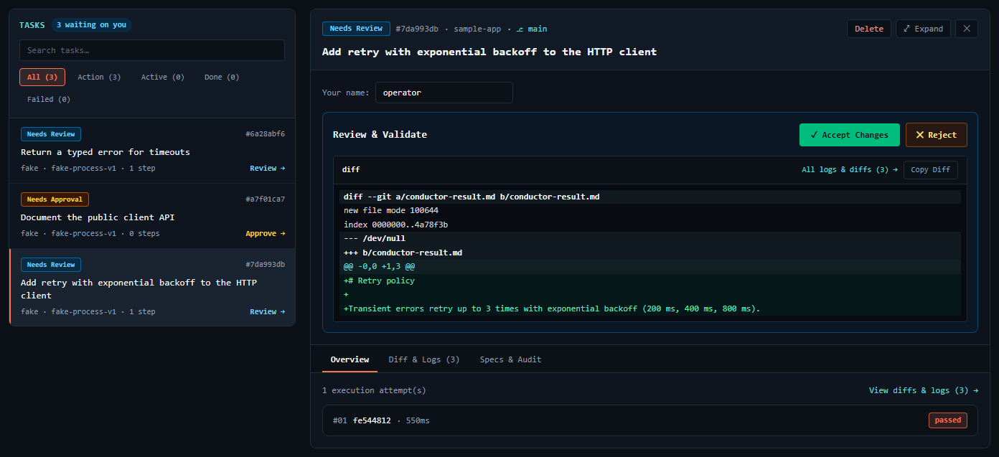
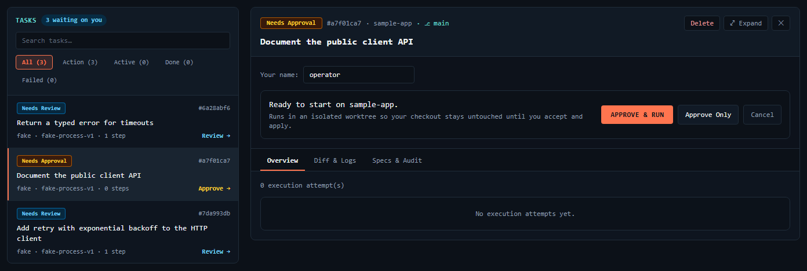
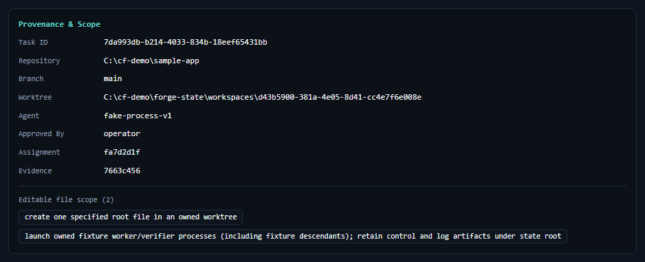

A local-first forge for coding agents
Control the chaos.
You approve the scope. Local workers write the change in their own Git worktree, not your checkout. You review the diff and an independent verifier's evidence. The forge applies nothing to your checkout until you accept it.
Runs the Cursor and Codex CLIs you already have, routed by a local model. No cloud service of ours in the loop.
| Drawing | CF-0001 · Clatterforge forge | ||
|---|---|---|---|
| Rev | {{VERSION}} | Status | Alpha |
| Runs on | Windows · macOS · Linux | ||
| License | Apache-2.0 | Sheet | 1 of 5 |
Sheet 01
Exhibit
The app itself, not a mock-up. Real screenshots of Clatterforge v0.1.0 working on a demo repository.

Fig. 1 · Review
- The board: everything waiting on you, by state.
- Status, task, repository and branch.
- The diff exactly as the worker produced it, in its own worktree.
- Accept or reject. Nothing lands in your checkout until you do.
- Each attempt and the independent verifier's result.

Fig. 2 · Approval
Nothing runs until you approve the assignment, and it runs in an isolated worktree.

Fig. 3 · Provenance
Every task keeps who approved what, against which assignment, with which evidence.
Note The worker in these screenshots is the built-in deterministic test worker (fake-process-v1), so the demo runs anywhere. In use it is a Codex or Cursor CLI.
Sheet 02
Routing sheet
Every change travels the same route. Each operation leaves a record you can inspect.
| Op | Operation | Work center | What it records | Inspection |
|---|---|---|---|---|
| 010 | Objective | You | Repository context and the exact base commit | — |
| 020 | Approval | You | Scope, worker, verifier and limits, bound to one revision | Signed off |
| 030 | Supervised run | Worker cell | Owned process tree, timeouts, logs; a crash leaves evidence, never a rerun | — |
| 040 | Verification | Independent verifier | Exit code and output, separate from anything the agent claims | Pass / fail |
| 050 | Integration | You | An explicit apply to your checkout, or a branch and pull request | Your call |
Note Review comments on a candidate feed the next repair round, back through op 030.
Sheet 03
Tolerances
What the forge holds, and what it does not. Agent tooling tends to blur this line; here it is in writing.
- HeldAn approval binds to one exact revision of the assignment.
- HeldWorkers run as owned process trees with timeouts and a global stop.
- HeldAfter a crash a task is reconciled as unknown. It is never silently rerun.
- HeldVerification is independent of the worker's own claims.
- HeldWorkers see an allowlisted environment. Tokens in your shell stay out.
- HeldOnly the main forge changes policy. Edge clients cannot widen their scope.
- Not heldA worktree isolates Git changes. It does not sandbox the agent's process.
- Not heldCoding CLIs run with your account, your profile and your network.
- Not heldProcess and network limits apply only to verifiers in the optional sandbox (Docker, or a Windows AppContainer).
Read the security boundaries and the sandbox runbook before pointing it at anything you care about.
Sheet 04
Assembly
One forge holds the state and the policy. Other machines connect to it.
A
Main forge
The desktop app. Owns state, approvals, supervision and policy, with HTTP and MCP interfaces over the same task lifecycle.
Windows · macOS · Linux
B
Sparks clatterforge-edge
Edge clients on other machines, acting within the scope the forge grants.
Linux
C
Web client
The same interface served by the forge, for review from another machine.
Loopback by default
Sheet 05
Parts list rev {{VERSION}}
The Windows, macOS and AppImage builds update themselves from signed releases; the .deb has no update channel yet, so install each new release yourself. State lives outside the install folder, so updates and uninstalls leave it alone.
| Item | Platform | Part | Finish | Download |
|---|---|---|---|---|
| 1 | Windows x64 | Clatterforge_{{VERSION}}_x64-setup.exe |
Unsigned. SmartScreen warns on first run. | Download |
| 2 | macOS Apple silicon | Clatterforge_{{VERSION}}_aarch64.dmg |
Signed and notarized | Download |
| 3 | macOS Intel | Clatterforge_{{VERSION}}_x64.dmg |
Signed and notarized | Download |
| 4 | Linux x86_64 | Clatterforge_{{VERSION}}_amd64.AppImage |
One file, updates itself in place | Download |
| 5 | Linux Debian, Ubuntu | Clatterforge_{{VERSION}}_amd64.deb |
No auto-update yet; install new releases yourself | Download |
Also signatures and release notes on the release page. To build from source, start with the README and the first-agent guide.